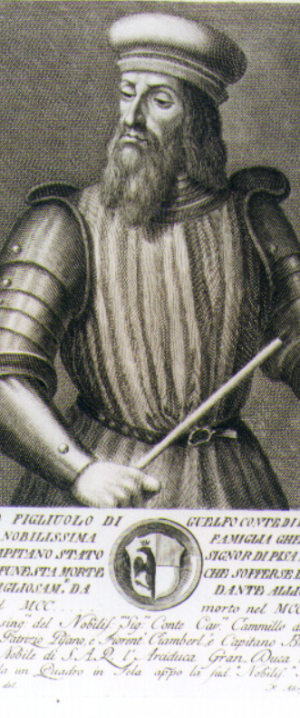
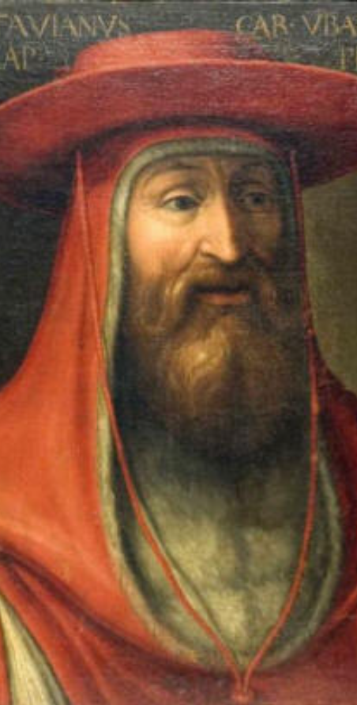
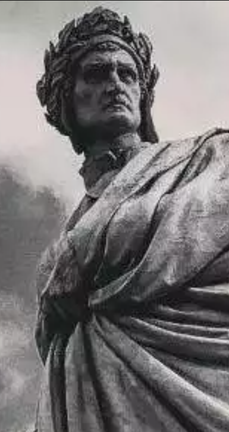

«La bocca sollevò dal fiero pasto
quel peccator, forbiendola a' capelli
del capo ch'elli avea di retro guasto.»
Sezione I
Nel trentatreesimo canto dell'Inferno Dante affronta uno degli episodi più tragici e drammatici di tutta la Commedia: quello del conte Ugolino della Gherardesca, condannato tra i traditori nella gelida regione di Cocito. Il poeta e Virgilio si trovano nell'Antenora, la zona dove sono puniti coloro che tradirono la patria o il proprio partito politico. Qui Dante vede una scena terribile: un dannato rode con ferocia il cranio di un altro peccatore, quasi come una bestia.
Colpito dall'orrore di quella visione, Dante gli domanda chi sia e quale odio così profondo lo spinga a tormentare eternamente il compagno di pena. Il dannato allora solleva la bocca insanguinata dal capo che stava divorando e inizia a raccontare la sua storia. Egli rivela di essere il conte Ugolino della Gherardesca, potente signore pisano coinvolto nelle lotte politiche della città, mentre il peccatore che egli tormenta è l'arcivescovo Ruggieri degli Ubaldini, suo nemico e traditore.
Ugolino racconta che, dopo essere stato imprigionato nella torre della Muda insieme ai figli Gaddo e Uguccione e ai nipoti Anselmuccio e Brigata, trascorsero molti mesi di prigionia. La torre, destinata a diventare simbolo di fame e disperazione, sarebbe poi stata chiamata «torre della fame». Durante la detenzione il conte ebbe un sogno terribile, che si rivelò un presagio della tragedia imminente: egli vedeva l'arcivescovo Ruggieri comportarsi come un cacciatore spietato che guidava una muta di cani famelici contro un lupo e i suoi piccoli. Il lupo rappresentava Ugolino stesso, mentre i lupacchiotti erano i figli e i nipoti.
Al risveglio Ugolino sente i bambini piangere nel sonno e chiedere il pane. Poco dopo ode un rumore terribile: l'uscio della torre viene inchiodato. In quell'istante egli comprende immediatamente la verità: i carcerieri hanno deciso di lasciarli morire di fame. Inizia così una lenta e atroce agonia. Ugolino, disperato, si morde le mani per il dolore; i figli, credendo che lo faccia per la fame, si offrono perfino di sacrificare il proprio corpo per salvarlo.
I giorni passano lentamente. A poco a poco i ragazzi iniziano a morire uno dopo l'altro. Il primo a cadere è il piccolo Gaddo, che si getta ai piedi del padre chiedendo aiuto prima di spirare. Rimasto solo, ormai quasi cieco, il conte continua per due giorni a chiamare i figli morti, brancolando nel buio. Alla fine anche lui muore di fame. Il verso conclusivo del racconto — «Poscia, più che 'l dolor, poté 'l digiuno» — è tra i più celebri e discussi della Divina Commedia, volutamente ambiguo.
Dante, profondamente colpito dalla tragedia, esplode in una violenta invettiva contro Pisa, definita «vituperio delle genti», auspicando che il fiume Arno sommerga completamente la città. Poi i poeti proseguono verso la Tolomea, dove sono puniti i traditori degli ospiti. I dannati giacciono supini nel ghiaccio e le lacrime si congelano formando visiere di cristallo che impediscono persino il conforto del pianto.
In questo luogo un dannato implora Dante di liberargli gli occhi dal ghiaccio. In cambio della promessa di aiuto rivela la sua identità: è frate Alberigo dei Manfredi. Dante resta stupito, perché sa che il frate è ancora vivo sulla Terra. Il dannato spiega una caratteristica terribile della Tolomea: quando qualcuno tradisce i propri ospiti, la sua anima precipita immediatamente all'Inferno, mentre sulla Terra il corpo continua a vivere posseduto da un demonio. Rivela inoltre che vicino a lui si trova Branca Doria, nobile genovese ancora vivo nel 1300. Dopo aver ottenuto le informazioni desiderate, Dante decide di non mantenere la promessa. Il canto si chiude con un'invettiva contro Genova e i suoi abitanti.
Sezione II
Tema I
La tematica del tradimento della patria, punita nell'Antenora, è presente nel canto, ma il conte Ugolino si presenta più come il tradito che come il traditore. Le sue azioni politiche — la cessione di castelli a Firenze e Lucca — sono riportate solo come una voce, e il suo peccato rimane volutamente nell'ombra. Per un'ingegnosissima combinazione Ugolino si trova legato in eterno proprio all'arcivescovo Ruggieri, che in vita lo ha tradito in maniera vile: fidandosi di lui era tornato a Pisa, e l'arcivescovo lo aveva fatto immediatamente imprigionare. Il vero tema, quindi, non è il tradimento del conte, ma quello di Ruggieri, la cui testa è il «fiero pasto» di Ugolino: pena per contrappasso, poiché l'arcivescovo lo aveva affamato.
Tema II
La tematica del dolore paterno è la più toccante del canto. Ugolino è un padre disperato che non ha potuto aiutare i suoi figli e nipoti, costretti a morire di fame innocenti. Ha dovuto assistere impotente alla morte dei quattro giovani, ripercorrendo le tappe dolorose di quell'agonia: dallo sguardo smarrito di Anselmuccio alla richiesta d'aiuto di Gaddo — «Padre mio, ché non m'aiuti?» — parole paragonate a quelle di Cristo crocifisso rivolte al Padre. Ugolino si distingue dagli altri dannati perché introduce una nota di calda umanità tra gli esseri pietrificati di Cocito. L'amore e la tenerezza che mostra per i figli abbellisce la sua figura e la riscatta dall'orrore infernale. Prova nei confronti di Ruggieri un odio inestinguibile: anche avendolo sotto i denti, rimane insoddisfatto, perché non c'è vendetta che possa saziare il suo infinito dolore.
Tema III
La tragedia della morte per fame è l'altro tema straziante del canto, che si preannuncia nel sogno di Ugolino — dove padre e ragazzi vengono sbranati — e nel sogno dei giovani, dove essi non possono mangiare. Ugolino si morderà le mani per la disperazione; i figli, pensando ch'egli voglia mangiarsi dalla fame, si offriranno di essere a loro volta mangiati. Nell'Inferno, Ugolino mastica per l'eternità la nuca di Ruggieri, che, affamatore di Ugolino e dei suoi cari, è adesso condannato a sfamare chi aveva affamato. Il celebre verso finale — «Poscia, più che 'l dolor, poté 'l digiuno» — è volutamente ambiguo: alcuni lo leggono come semplice morte per inedia, altri come confessione di cannibalismo. Ricerche scientifiche sui resti ritrovati a Pisa nel 1928 sembrano tuttavia escludere questa seconda ipotesi.
Tema IV
Il ghiaccio di Cocito simboleggia la freddezza del cuore dei traditori e la punizione divina. Ruggieri, però, non si limita a essere conficcato nel ghiaccio: subisce anche una punizione aggiuntiva — una vendetta umana — poiché la sua nuca è rosa per l'eternità dalla sua vittima. La sua disumanità è resa ancora più inaccettabile dal fatto che egli era arcivescovo, pastore d'anime, eppure non ha avuto rispetto per la vita umana, tantomeno per quella di giovani innocenti. La doppia condanna — divina e umana — rispecchia la duplice dimensione della giustizia dantesca: la legge di Dio e il diritto alla memoria delle vittime.
Tema V
Il tema politico è presente nella potente invettiva contro Pisa, dove Dante paragona la città all'antica Tebe, sede degli orrori della stirpe di Cadmo raccontati nella Tebaide di Stazio. Pisa viene vista come una città incapace di pace sociale, che impunita causa solo dolore. Vi è poi il richiamo alle lotte di fazione tra guelfi e ghibellini: Ugolino e Ruggieri rappresentano le due istituzioni contrapposte dell'epoca — l'Impero nella persona del conte, la Chiesa nella persona dell'arcivescovo. Il canto si chiude con un'invettiva contro Genova, dove i Genovesi vengono presentati come uomini senza onore, colpevoli di aver prodotto traditori come Branca Doria. I toni, però, sono più sommessi: Dante sembra ormai stremato di tanti severi rimproveri.
Tema VI
Nell'ultima parte del canto è presente la tematica del tradimento dell'ospitalità, incarnata da frate Alberigo dei Manfredi e da Branca Doria. Il primo invitò due suoi parenti a un banchetto fingendo riconciliazione e, al segnale «Vengano le frutta!», li fece assassinare. Il secondo fece uccidere il suocero Michele Zanche durante un banchetto. Questo peccato è così grave che le anime precipitano nel Cocito prima ancora della morte fisica: i corpi, ancora vivi sulla Terra, sono abitati da un demonio. Dante, avendo ottenuto le informazioni da Alberigo, decide di non liberargli gli occhi dal ghiaccio: verso i traditori degli ospiti la cortesia è viltà, la villania è giustizia.
Sezione III

Ugolino della Gherardesca
Conte · Traditore della patria · Antenora
| Nato | Pisa, ca. 1220 |
| Morto | 1289, nella Torre della Muda |
| Pena | Immerso nel ghiaccio, rode il cranio di Ruggieri |
| Contrappasso | Afframato, ora «affama» il suo affamatore |
Nobile pisano, ghibellino per nascita, si avvicinò al partito guelfo dei Visconti. Dopo la sconfitta pisana nella battaglia della Meloria (1284), ottenne pieni poteri come Capitano del Popolo. Alleatosi poi con l'arcivescovo Ruggieri degli Ubaldini, fu da lui tradito nel 1288 e imprigionato nella torre della Muda insieme a due figli e due nipoti, dove morì di fame. Nel canto Dante ne esalta soprattutto la dimensione di padre straziato, riscattando la sua figura umana dall'orrore della condanna infernale.

Ruggieri degli Ubaldini
Arcivescovo di Pisa · Traditore · Antenora
| Ruolo | Arcivescovo di Pisa (†1295) |
| Pena | Il cranio eternamente roso da Ugolino |
| Contrappasso | Affamatore, ora è il «cibo» dell'affamato |
Guida della nobiltà ghibellina pisana, orchestrò nel 1288 la cacciata di Nino Visconti e fece imprigionare Ugolino, al quale aveva promesso protezione. Nella finzione poetica Ruggieri è quasi assente come voce: è ridotto a cranio muto, «fiero pasto» dell'eterno odio della sua vittima. La sua disumanità è aggravata dalla sua condizione di pastore d'anime: avrebbe dovuto tutelare la vita, e invece la ha soppressa con calcolo freddo.
Frate Alberigo dei Manfredi
Frate Gaudente · Traditore degli ospiti · Tolomea
| Nato | Faenza, ca. 1240 |
| Morto | ca. 1309 (ma l'anima è già all'Inferno) |
| Pena | Supino nel ghiaccio, lacrime congelate sugli occhi |
| Il segnale | «Vengano le frutta!» — ordine ai sicari |
Membro dell'ordine dei Frati Gaudenti, nel 1285 invitò a banchetto i parenti Manfredo e Alberghetto, fingendo riconciliazione. Al segnale convenuto, i sicari nascosti trucidarono gli ospiti. Questo episodio diede origine al detto «ricevere la frutta di frate Alberigo». Si presenta a Dante con ironica rassegnazione: «che qui riprendo dattero per figo» — paga una pena (il dattero, più pregiato) molto più amara del vantaggio ottenuto (il fico).

Branca Doria
Nobile Genovese · Traditore degli ospiti · Tolomea
| Nato | Genova, ca. 1233 |
| Morto | 1325 (ma l'anima è già all'Inferno dal 1275) |
| Delitto | Assassinio del suocero Michele Zanche a un banchetto |
| Pena | Tolomea, nel ghiaccio, occhi sigillati dal gelo |
Esponente della potente famiglia ghibellina dei Doria, nel 1275 invitò il suocero Michele Zanche, barone del Giudicato di Logudoro in Sardegna, a un banchetto conviviale. A un segnale convenuto, Branca e i suoi complici lo uccisero e lo fecero a pezzi, per usurparne i possedimenti sardi. Dante stupisce nel trovarlo nella Tolomea: nel 1300 Doria è ancora vivo a Genova, dove morirà solo nel 1325. Il suo corpo, però, è da anni governato da un demonio.
Sezione IV
Lettura del canto
Le terzine e il commento scorrono accanto al video
Sezione V
Analisi approfondita del lessico, delle figure retoriche e dello stile per ciascuna sezione del canto.
Contenuto e parafrasi
Il peccatore solleva la bocca dal suo pasto feroce — il cranio di Ruggieri, che stava addentando — e la pulisce usando come panno i capelli della testa devastata nella parte posteriore.
Stile
Lo stile è quello tragico dantesco: straordinaria densità concettuale, solennità, atmosfera cupa. Rispetto ad altre zone dell'Inferno Dante adotta un registro alto, con lessico improntato a un realismo espressionistico estremo, tipico dell'ultimo Inferno.
Figure retoriche
Metafora «fiero pasto»: l'aggettivo «fiero», che indica fierezza animale, descrive un atto di cannibalismo infernale, elevando l'orrore a dimensione epica.
Realismo descrittivo «di retro guasto»: specifica il punto dell'offesa, sottolineando il contrappasso — come Ruggieri agì subdolamente alle spalle di Ugolino, ora Ugolino rode il suo capo a partire dalla nuca.
Prolessi narrativa: questo gesto silenzioso e terribile prepara il lettore alla parola che seguirà, creando un contrasto netto tra bestialità dell'azione e successiva eloquenza del discorso.
Contenuto
Ugolino stabilisce la condizione per parlare: il racconto non è uno sfogo, ma un'arma di vendetta politica e morale. Accetterà il dolore del ricordo solo se la sua testimonianza produrrà l'infamia eterna di Ruggieri.
Figure retoriche
Metafora della semina: le parole come «semenza» che «frutti infamia» — la narrazione è un atto generativo che deve produrre un risultato concreto nel mondo dei vivi.
Antitesi: «parlare e lagrimar vedrai insieme» — dolore del pianto e lucidità della parola si fondono in un'immagine di sofferenza comunicativa.
Allitterazione della sibilante-s e della f: «semenza», «traditor», «frutti», «infamia» — trasmette l'astio e il desiderio di vendetta.
Stile e lessico
Il registro è secco, espositivo e lapidario, come un'iscrizione funeraria o un verbale giudiziario. Il passato remoto «fui» è fondamentale: indica che il titolo e il potere appartengono a una vita conclusa. Ugolino non è più il conte, ma lo è stato.
Figure retoriche
Parallelismo: «io fui conte Ugolino / e questi è l'arcivescovo Ruggieri» — i due avversari sullo stesso piano, accomunati dalla stessa zona infernale.
Antitesi temporale: il contrasto tra il passato «fui» e il presente «è» sottolinea la caduta dalla gloria terrena alla miseria eterna.
Eufemismo: «tal vicino» — termine spaziale neutro per descrivere l'atto mostruoso del rodere il cranio altrui.
Deissi: «questi» presuppone un gesto fisico di indicazione, aumentando il realismo drammatico della scena.
Stile
Stile tragico dantesco per i vv. 22-27, poi «plurilinguismo» dantesco: elementi della poesia elevata e cortese si fondono con lessico venatorio («donno», latinismo; «cagne», «cacciando», «lupicini»). Dal v. 31 lo stile diventa narrativo e analitico, con registro tecnico-venatorio per il sogno premonitore.
Figure retoriche
Allegoria: l'intera scena della caccia è allegorica. Le cagne = popolo pisano; i cacciatori (Gualandi, Sismondi, Lanfranchi) = leader ghibellini; il lupo e i lupicini = Ugolino e i figli.
Personificazione: i tre aggettivi riferiti alle cagne — «magre, studiose e conte» — sono attributi umani applicati alle bestie, suggerendo che la folla sia stata scientificamente «istruita» all'odio.
Climax: «magre, studiose e conte» — da condizione fisica (affamate), a disposizione psicologica (accanite), a competenza strategica (esperte). La minaccia si fa crescente.
Perifrasi: «al monte / per che i Pisan veder Lucca non ponno» — il Monte San Giuliano (Monte Pisano) che si erge tra Pisa e Lucca, senza nominarlo.
Metonimia: «più lune» — la luna per il mese, con valore visivo (l'unica cosa visibile dalla feritoia della torre).
Metafora: «del futuro mi squarciò 'l velame» — il futuro come velo che il sogno premonitore lacera violentemente.
Onomatopea: «chiavar» — il suono sordo del chiodo nella serratura, tra i più tesi del canto.
Stile
I vv. 49-54 mostrano paralisi emotiva e rottura della comunicazione: Ugolino non è più in grado di provare emozioni. Fortissimo contrasto tra l'«io» e l'«elli» (i figli). I vv. 55-57 usano la luce come elemento divino ma portatore di orrore. I vv. 67-69 contengono un chiarissimo riferimento al grido di abbandono del Salmo 22, costruendo una passione laica: i giovani sono figure cristologiche che pagano per colpe altrui.
Figure retoriche
Metafora: «dentro impetrai» — Ugolino è pietrificato nell'animo, metafora dell'anestesia emotiva totale.
Antitesi: Ugolino non piange, i figli piangono — contrasto tra il padre e i figli.
Specchio / metafora: nei quattro visi Ugolino vede «il mio aspetto stesso» — la propria morte riflessa nei volti dei figli.
Sineddoche: «queste misere carni» per l'intero corpo — con annessa antitesi sullo spogliare e rivestire le carni (eco dell'investitura dell'anima nel corpo).
Apostrofe: «ahi dura terra, perché non t'apristi?» — la terra personificata, con riferimento al mito classico in cui si apre per pietà o punizione.
Climax: la situazione peggiora di giorno in giorno fino all'estremo, con i figli che muoiono «ad uno ad uno».
Poliptoto: «padre» ripetuto in varie forme — non distoglie l'attenzione dal personaggio centrale.
Stile
Passaggio solenne e lapidario. Dante abbandona il linguaggio aspro del «pasto bestiale» per un registro più alto e dolente, dove la concisione rende ancora più insopportabile il peso dell'ingiustizia. La chiusura è fulminea: in tre versi — vv. 88-90 — condensa il nucleo emotivo dell'intero episodio.
Figure retoriche
Anastrofe: «Innocenti facea l'età novella» — «Innocenti» in apertura di verso come accusa morale immediata, prima ancora di nominare le vittime.
Antonomasia: «novella Tebe» — Pisa come la città più maledetta del mito greco, teatro degli orrori della stirpe di Edipo.
Epanalessi: «novella» si ripete tra il v. 88 e il v. 89 con effetto tragico — la giovane età delle vittime si scontra con la rinata crudeltà della città.
Perifrasi: «li altri due che 'l canto suso appella» — Gaddo e Anselmuccio citati indirettamente, per invitare il lettore a ricordare i loro volti.
Stile
Le parole «rintoppo» e «ambascia» evocano sensazione fisica di oppressione. Il termine «visiere» richiama il mondo cavalleresco ma lo stravolge: la visiera qui imprigiona invece di proteggere. La supplica di Alberigo usa un linguaggio carnale — «impregna» — che descrive un dolore fisico insostenibile.
Figure retoriche
Ossimoro: il pianto che impedisce di piangere — paradosso fisico e psicologico della Tolomea.
Poliptoto: «pianto» e «pianger» ravvicinati per esasperare il concetto del pianto negato.
Similitudine: le lacrime congelate come «visiere di cristallo» — il cristallo richiamava la convinzione scientifica medievale che fosse vetro indurito dal tempo.
Similitudine: l'insensibilità del viso paragonata a quella di un callo — metafora cruda e realistica.
Perifrasi botanica: Alberigo usa «frutta», «orto», «dattero», «figo» per descrivere il delitto e la pena — contrasto stridente con l'orrore del luogo.
Ripetizione: «I' son frate Alberigo / i' son quel…» — la tragica presa di coscienza della propria identità perduta.
Contenuto e stile
Dante non mantiene la promessa fatta ad Alberigo: non libera il dannato dal ghiaccio. Giustifica il gesto con un capovolgimento morale: nell'Inferno, che è il luogo della giustizia divina, la pietà verso il male può diventare ingiustizia verso Dio. L'invettiva contro Genova è più breve e sommessa rispetto a quella contro Pisa: Dante sembra ormai stremato dei propri rimproveri e intende passare oltre.
Figure retoriche
Antitesi: «cortesia» e «villano» — la vera cortesia consiste nell'essere crudele con chi ha tradito i legami più sacri.
Anastrofe: «uomini diversi / d'ogne costume» — ordine sintattico invertito per dare forza all'accusa.
Polisindeto: «e mangia e bee e dorme e veste panni» — enumerazione per sottolineare l'assurdo paradosso del corpo vivo senza anima.
Perifrasi: «col peggiore spirto di Romagna» — indica Alberigo senza nominarlo, come se il suo nome non meritasse di essere pronunciato di nuovo.
Sezione VI
I principali interpreti del canto e le loro posizioni sui nodi più discussi: l'ambiguità del verso 75, il carattere di Ugolino, il valore allegorico del sogno.
Francesco De Sanctis
Storico e critico letterario, XIX sec.
Massimo esponente della critica romantica ottocentesca, De Sanctis è il più autorevole sostenitore di una lettura «pura» dell'episodio. Secondo lui, il verso conclusivo non implica alcun atto di antropofagia: Ugolino muore semplicemente di fame, stroncato dall'inedia dopo aver sopportato lo strazio indicibile della morte dei figli. De Sanctis esalta la grandezza tragica della figura paterna di Ugolino, rivendicandone la piena umanità come vertice della rappresentazione dantesca del dolore.
Jacopo della Lana
Primo commentatore dantesco, XIV sec.
Tra i primissimi commentatori della Commedia, Jacopo della Lana non esclude l'interpretazione più cruda del verso 75. Per lui il «digiuno» che «poté» sul «dolore» potrebbe indicare che Ugolino, sopraffatto dalla fame, si sia alla fine nutrito dei corpi dei figli morti. Questa lettura si inserisce coerentemente nel motivo del mangiare/essere mangiati che percorre tutto il canto, dalla scena iniziale del rodere il cranio di Ruggieri all'offerta dei figli di farsi divorare.
Jorge Luis Borges
Scrittore argentino, «Nove saggi danteschi», 2001
Nel suo celebre saggio dantesco, Borges legge l'ambiguità del verso 75 come una scelta deliberata e irrisolvibile del poeta. Dante avrebbe voluto insinuare nel lettore il sospetto che il cannibalismo sia avvenuto, senza mai confermarlo né smentirlo. L'ambiguità diventa così un dispositivo estetico e morale: la questione rimane aperta, e proprio nella sua irrisolvibilità risiede una parte del potere perturbante dell'episodio.
Mario Marcazzan
Dantista italiano, XX sec.
Marcazzan si è concentrato sul valore allegorico e narrativo del sogno premonitore. Secondo il suo studio, il sogno non è solo un espediente narrativo per anticipare la tragedia, ma prefigura con precisione strutturale la caccia del popolo pisano — aizzato da Ruggieri — contro Ugolino e i suoi figli. Il lupo e i lupicini rappresentano perfettamente la condizione di chi, preda della politica, vede i propri legami più naturali (la famiglia) divenire bersaglio della vendetta collettiva.
Benvenuto da Imola
Commentatore dantesco, XIV sec.
Benvenuto da Imola, nel suo ampio commento alla Commedia, ha fornito importanti chiarimenti sul personaggio di frate Alberigo. In particolare ha identificato il «mal orto» della celebre terzina — «i' son quel da le frutta del mal orto» — non con la mente malvagia del frate, come altri intendevano, ma con la città di Faenza stessa, teatro del delitto. L'«orto» sarebbe quindi il luogo fisico del tradimento, la villa di Pieve Cesato dove avvenne il massacro del 1285.
Indagini scientifiche del Comune di Pisa
Analisi del DNA, resti ritrovati nel 1928
Nel 1928 furono ritrovati nella cappella della chiesa di San Francesco a Pisa quelli che si suppone siano i resti di Ugolino e degli altri rinchiusi con lui nella Muda. Le analisi del DNA promosse dal Comune di Pisa hanno identificato cinque salme, morte effettivamente per denutrizione: l'individuo più anziano aveva oltre settant'anni, altri due avevano tra i quaranta e i cinquant'anni, i due rimanenti erano più giovani. Se l'identificazione è corretta, l'età avanzata di Ugolino e le sue condizioni fisiche rendono improbabile qualunque atto di cannibalismo, escludendo di fatto l'interpretazione più cruda del v. 75.
Sezione VII
Stile Stile tragico dantesco: straordinaria densità concettuale, lessico improntato a un realismo espressionistico estremo. Il verbo forbiendola (pulendola) è tecnicamente preciso e quasi quotidiano, il che rende il gesto ancora più agghiacciante.
Figure retoriche — Metafora «fiero pasto»: «fiero» (fierezza animale) descrive un atto di cannibalismo infernale, elevando l'orrore a dimensione epica. — Realismo descrittivo «di retro guasto»: specifica il punto dell'offesa come contrappasso — come Ruggieri agì alle spalle di Ugolino, così ora Ugolino rode il capo dalla nuca. — Prolessi narrativa: questo gesto silenzioso prepara il lettore alla parola che seguirà, creando un contrasto netto tra bestialità e successiva eloquenza.